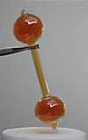

vapor

Definition: In physics, a vapor (American English) or vapour (British English and Canadian English; see spelling differences) is a substance in the gas phase at a temperature lower than its critical temperature, which means that the vapor can be condensed to a liquid by increasing the pressure on it without reducing the temperature of the vapor. A vapor is different from an aerosol. An aerosol is a suspension of tiny particles of liquid, solid, or both within a gas.For example, water has a critical temperature of 647 K (374 °C; 705 °F), which is the highest temperature at which liquid water can exist at any pressure. In the atmosphere at ordinary temperatures gaseous water (known as water vapor) will condense into a liquid if its partial pressure is increased sufficiently.
Source: Wikipedia
Wikipedia Page
Wikidata Page